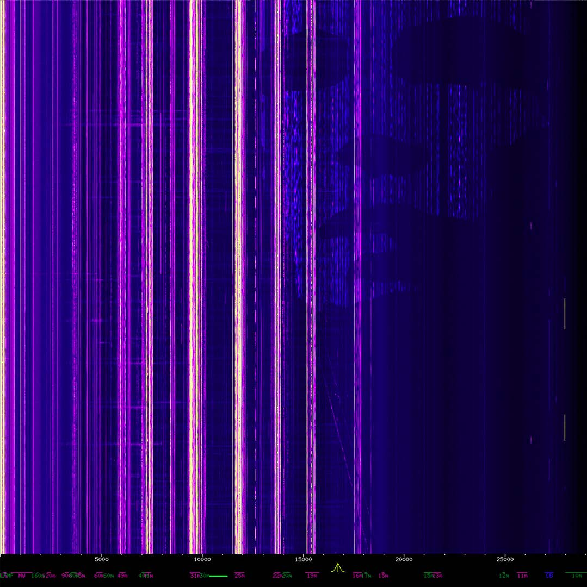
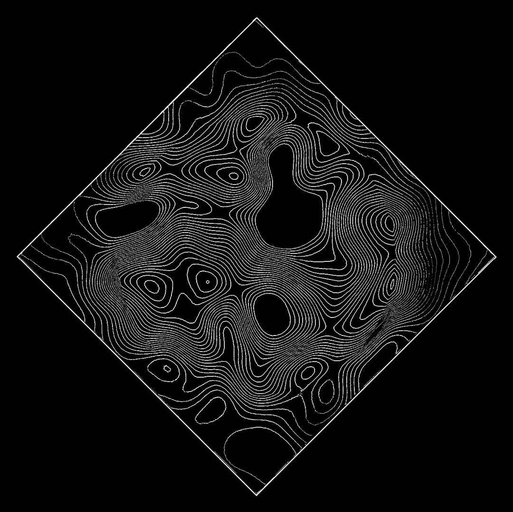
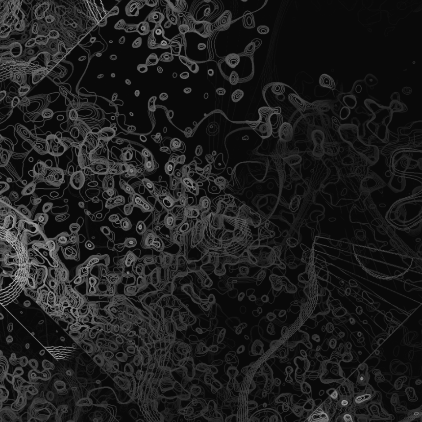
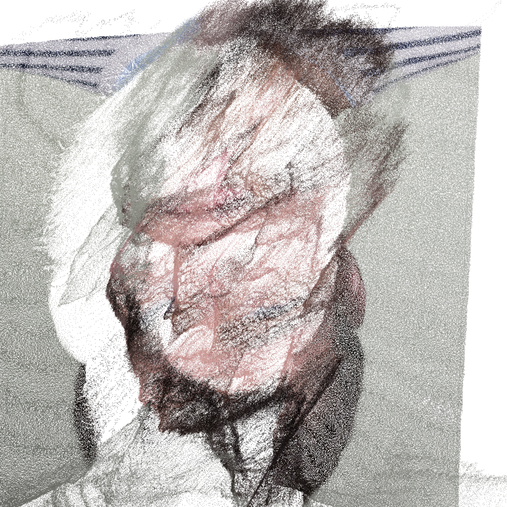
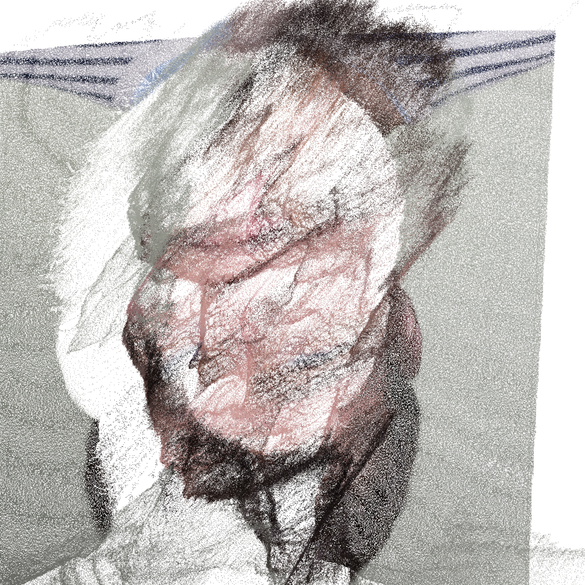

I built my first computer as a teen and have been fascinated by them ever since. In recent years I've delved into coding and generative art amongst other fun bits of software. Touchdesigner is my current favourite tool for programming visuals (for it's versatility and speed making video and interactive programs) but I also like Processing and in particular p5.js so here are a few examples.
I built my first gaming PC at the age of 16 and have been fascinated by computers ever since. In recent years I've delved into coding and generative art amongst other fun bits of software. Touchdesigner is my current favourite tool for programming visuals (for it's versatility and speed making video and interactive programs) but I also like Processing and in particular p5.js so here are a few examples.
Background image nicked from this online shortwave receiver.
  

I've recently been meddling with reaction diffusion algorithms and found it very fun. I havent seen anyone us a mask inside the feedback loop to control the overall shape before so expect to see this in my 2020 36 days of type @dee.kay.94 ...
Background image nicked from this online shortwave receiver. Some noise made in Touchdesigner used to make the face pattern.
Another one made in Touchdesigner, with some glsl nicked from the Derivative sample/learning files and fiddled with by me.
This is a particle system made from an oscilloscope created in Touchdesigner, some feedback and glow were added for a bit of flashiness.